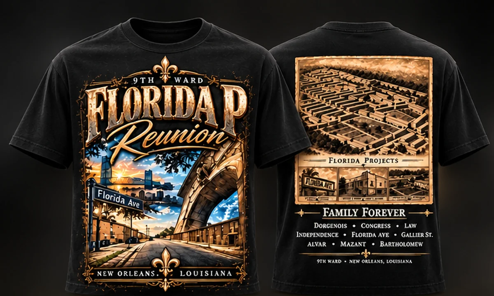
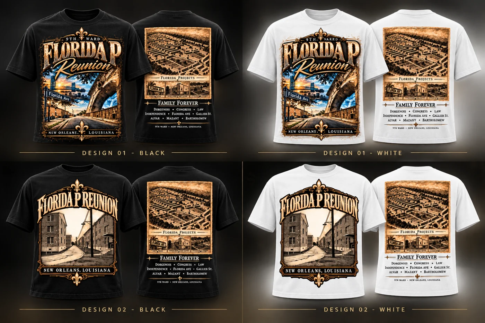
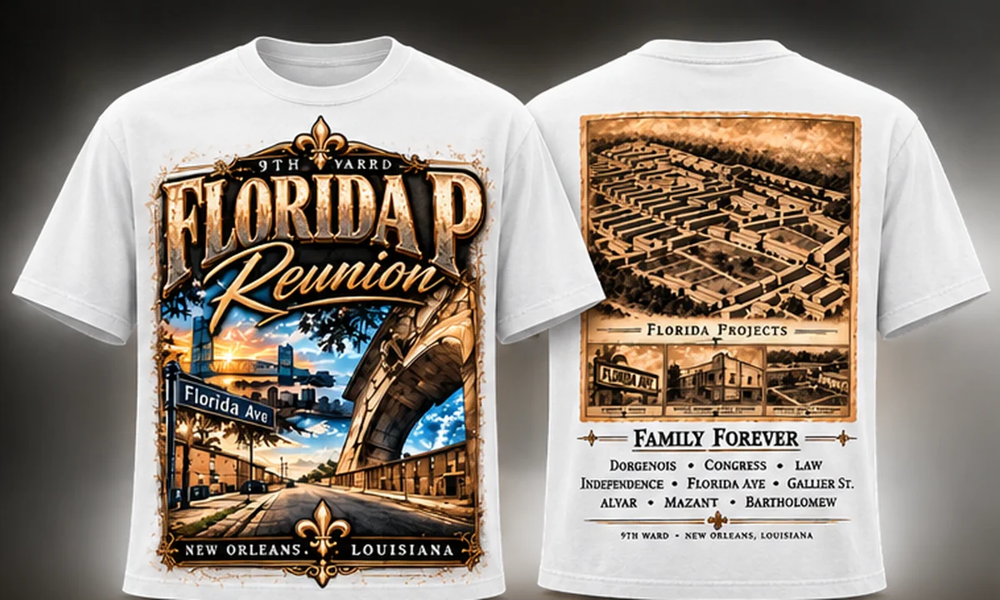
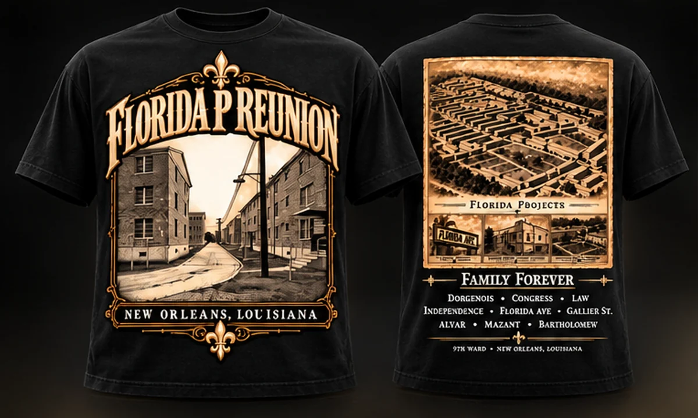
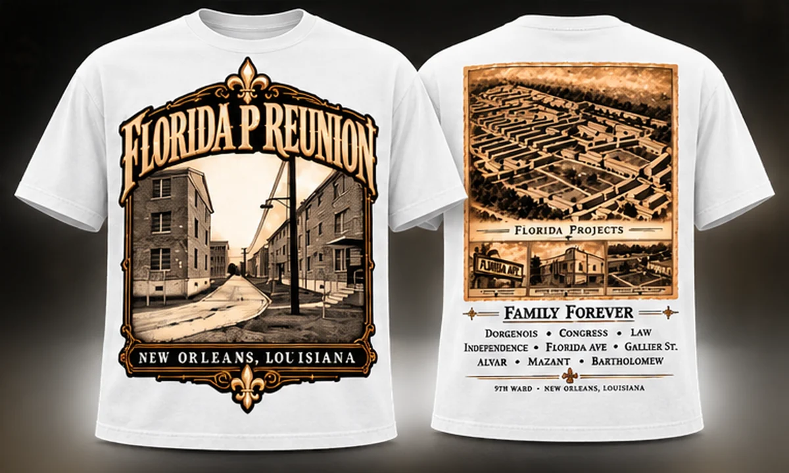

Florida P Reunion · Design 01 · Black
Black / Reunion Graphic. View sizes, price and availability at secure Square checkout.
Shop on Square ↗Created for the people and places behind the story. Distinct reunion, neighborhood and event projects live here, separate from the numbered NOLA EDITION archives.

Made for
a community.
Not every NOLA EDITION project belongs to a numbered release. Custom designs have a separate purpose. They recognize the people who gather around a neighborhood, event, organization or shared memory, while maintaining the same care in artwork and presentation.
Designed around the Florida Projects reunion and connections to the Downtown 9th Ward. Two design directions in black and white, each with an individual Square purchase link.

Black / Reunion Graphic. View sizes, price and availability at secure Square checkout.
Shop on Square ↗
White / Reunion Graphic. View sizes, price and availability at secure Square checkout.
Shop on Square ↗
Black / Architectural Heritage. View sizes, price and availability at secure Square checkout.
Shop on Square ↗
White / Architectural Heritage. View sizes, price and availability at secure Square checkout.
Shop on Square ↗Florida P is a custom NOLA EDITION design project, not Archive 001 or Archive 002. Pricing, available sizes and order details are finalized at Square checkout.
Florida Avenue, neighborhood architecture and the Florida Projects connection shape this custom artwork. Both design directions recognize a shared place, while retaining their own visual identity.
Future custom commissions can join this space without being confused with the numbered Archive releases.
Explore the NOLA EDITION CUSTOM studio for reunion, event and organization apparel, or return to our current featured collection.